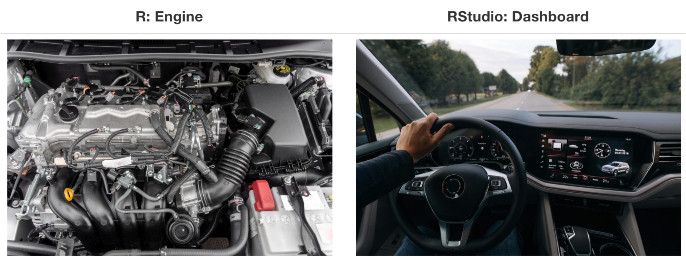
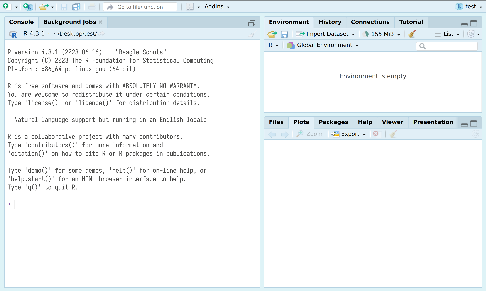
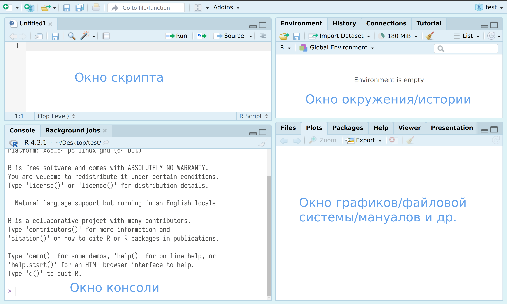
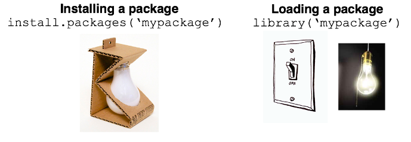

40+2[1] 423-2[1] 15*6[1] 3099/9[1] 112+4*2[1] 10(2+4)*2[1] 122^3[1] 8lingtypologylingtypologyВ Международной лаборатории языковой конвергенции есть страница с ресурсами.
Все приведенные страницы сделаны на quarto/Rmarkdown, а за карты там отвечает пакет lingtypology — надстройка над R-овским пакетом leaflet.
Некоторые люди справедливо не любят устанавливать лишние программы себе на компьютер. Вот несколько вариантов для них:
lingtypology работает и здесь, но почему-то не отображает подложку карт.R.Если вам понравилось, R можно установить на собственный компьютер:
sudo apt-get install r-cran-baseR, RStudio… как-то все путано… Картинка Стефано Каретты:

RStudio — основной IDE для R. После установки R и RStudio можно открыть RStudio и перед вами появится что-то похожее на изображение ниже:

После нажатия на двойное окошко чуть левее надписи Environment откроется окно скрипта.
Все следующие команды можно
Enter.Ctrl/Cmd + Enter или на команду Run на панели окна скрипта. Все, что введено в окне скрипта можно редактировать как в любом текстовом редакторе, в том числе сохранять Ctrl/Cmd + S.Если Вы работаете в <webr.r-wasm.org/>, то в окно консоли код всатвляется при помощи команды Ctrl/Cmd + Shift + V, а в окно скрипта ожидаемо Ctrl/Cmd + V.
Давайте начнем с самого простого и попробуем использовать R как простой калькулятор. +, -, *, /, ^ (степень), () и т. д.
40+2[1] 423-2[1] 15*6[1] 3099/9[1] 112+4*2[1] 10(2+4)*2[1] 122^3[1] 8Обратите внимание на то, что разделителем целой и дробной частей является точка, кроме того, если целая часть состоит исключительно из 0, то ее можно опустить.
50.3 + .7[1] 51Данные в R обычно причисляют к одному из типов. Сегодня нас будут волновать
42[1] 4257.57[1] 57.57"Жила-была на свете крыса"[1] "Жила-была на свете крыса"'В морском порту Вальпараисо,'[1] "В морском порту Вальпараисо,"'На складе мяса и маиса,'[1] "На складе мяса и маиса,""Какао и вина."[1] "Какао и вина."TRUE[1] TRUEFALSE[1] FALSENA[1] NAОбъединения значений одного типа в R называют вектор и соединяют их при помощи функции c():
c("лъа", "хъу")[1] "лъа" "хъу"c(5, 3, 2)[1] 5 3 2c(TRUE, FALSE, TRUE)[1] TRUE FALSE TRUEВ любом векторе могут быть пропущенные значения:
c("лъа", "хъу", NA)[1] "лъа" "хъу" NA c(5, NA, 3, 2)[1] 5 NA 3 2c(NA, TRUE, FALSE, TRUE)[1] NA TRUE FALSE TRUEТабличные данные в R представляют собой наборы векторов и называется датафрейм:
data.frame(name = c("Соня", "Лена"),
hair_length = c(50, 15),
work_in_academia = c(TRUE, FALSE),
residence = c("СПб", "Москва"))Все богатство R находиться в его огромной инфраструктуре пакетов, которые может разрабатывать кто угодно. Для сегодняшнего занятия нам понадобиться всего три: tidyverse, readxl, writexl lingtypology. Чтобы их установить нужно использовать команду
install.packages(c("tidyverse", "readxl", "writexl", "lingtypology"))Помните, что если вы установили пакет, это не значит, что фукнции пакета вам доступны. Пакет еще нужно включить

Проверим, что все установилось.
library(lingtypology)Based on the Glottolog v. 5.2map.feature(c("Nanai", "Guro"))Для того, чтобы прочитать данные из .csv, .tsv и т. п. нужно использовать функции read_csv() и read_tsv(), где в ковычках путь к файлу или URL.
library(tidyverse)── Attaching core tidyverse packages ──────────────────────── tidyverse 2.0.0 ──
✔ dplyr 1.1.4 ✔ readr 2.1.5
✔ forcats 1.0.0 ✔ stringr 1.5.2
✔ ggplot2 4.0.0 ✔ tibble 3.3.0
✔ lubridate 1.9.4 ✔ tidyr 1.3.1
✔ purrr 1.1.0
── Conflicts ────────────────────────────────────────── tidyverse_conflicts() ──
✖ dplyr::filter() masks stats::filter()
✖ dplyr::lag() masks stats::lag()
ℹ Use the conflicted package (<http://conflicted.r-lib.org/>) to force all conflicts to become errorsdf1 <- read_csv("https://raw.githubusercontent.com/agricolamz/2025.09.27_SPb_lingtypology/main/morning_greetings.csv")Rows: 33 Columns: 6
── Column specification ────────────────────────────────────────────────────────
Delimiter: ","
chr (6): lang, feature, value1, value1_name, value2, value2_name
ℹ Use `spec()` to retrieve the full column specification for this data.
ℹ Specify the column types or set `show_col_types = FALSE` to quiet this message.df1Можно также работать с файлами эксель (если Вы не боитесь), но для этого их надо скачивать локально на компьютер. Попробуйте считать вот такой файл.
library(readxl)
df2 <- read_xlsx("morning_greetings.xlsx")
df2Запись таблицы происходит при помощи команд write_csv(), write_tsv() и других. Кроме того есть пакет writexl с функцией write_xlsx().
Ссылки на датасеты, если у вас нет своих:
lingtypologyпроще продолжить на сайте-документации.